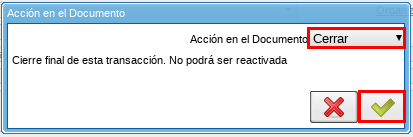
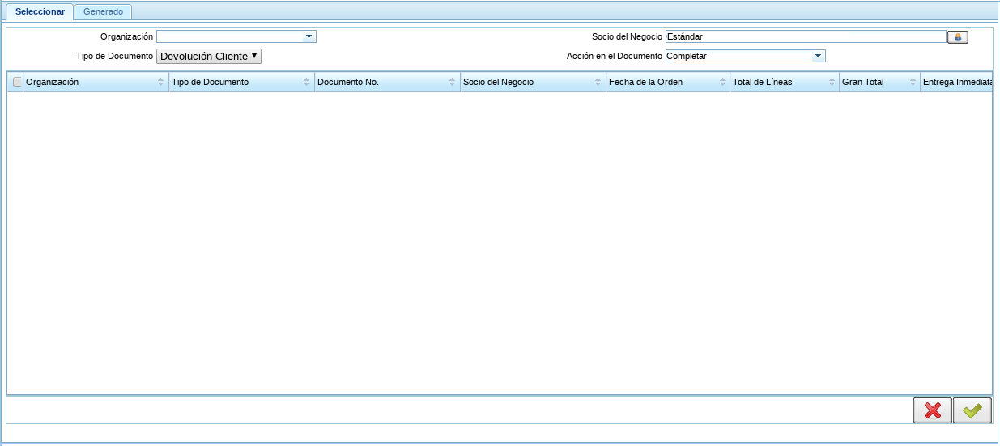

Generar Factura (Manual)¶
Realice su proceso regular de devolución de cliente, para este ejemplo el documento de entrega es el número “8939” y el de autorización de devolución de cliente es el número “123456789”.
Ubique la ventana “Generar Factura (Manual)” para visualizar la autorización de devolución de cliente disponible.

Imagen 1. Generar Factura Manual¶
Proceda a ubicar el documento “Autorización de Devolución de Cliente” que se procederá a cerrar.

Imagen 2. Autorización de Devolución de Cliente¶
Seleccione la opción “Cerrar” en el documento para que no sea visualizado en el proceso “Generar Factura (Manual)”.

Imagen 3. Opción Cerrar¶
Warning
Esta opción se puede realizar para aquellos clientes a los que no le son generadas ningún tipo de factura.
Seleccione la acción “Cerrar” y la opción “OK” para cerrar el documento.
Imagen 4. Acción Cerrar y Opción OK¶
Verifique que el campo “Estado del Documento” diga “Cerrado”.

Imagen 5. Estado del Documento¶
Ubique la ventana “Generar Facturas (Manual)” para rectificar que el documento “Autorización de Devolución de Cliente” de número “123456789” se cerró correctamente.
Imagen 6. Generar Factura Manual¶
Warning
Al realizar este procedimiento no se visualiza el documento “Autorización de Devolución de Cliente” en el formulario “Generar Facturas (Manual)”.